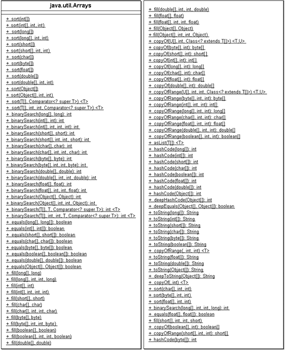

3.8 Arrays
Ein Array (auch Feld oder Reihung genannt) ist ein spezieller Datentyp, der mehrere Werte zu einer Einheit zusammenfasst. Er ist mit einem Setzkasten vergleichbar, in dem die Plätze durchnummeriert sind. Angesprochen werden die Elemente über einen ganzzahligen Index. Jeder Platz (etwa für Schlümpfe) nimmt immer Werte des gleichen Typs auf (nur Schlümpfe und keine Pokémons). Normalerweise liegen die Plätze eines Arrays (seine Elemente) im Speicher hintereinander, doch ist dies ein für Programmierer nicht sichtbares Implementierungsdetail der virtuellen Maschine.
Jedes Array beinhaltet Werte nur eines bestimmten Datentyps bzw. Grundtyps. Dies können sein:
- elementare Datentypen wie int, byte, long und so weiter
- Referenztypen
- Referenztypen anderer Arrays, um mehrdimensionale Arrays zu realisieren
3.8.1 Grundbestandteile
Für das Arbeiten mit Arrays müssen wir drei neue Dinge kennenlernen:
- das Deklarieren von Array-Variablen
- das Initialisieren von Array-Variablen, Platzbeschaffung
- den Zugriff auf Arrays. Das umfasst den Lesenden Zugriff ebenso wie den schreibenden.
| Beispiel |
|
1. Deklariere eine Variable randoms, die ein Array referenziert: double[] randoms; randoms = new double[ 10 ]; Doppelten des ersten Elements: randoms[ 0 ] = Math.random(); |
Die drei Punkte schauen wir uns nun detaillierter an.
3.8.2 Deklaration von Arrays
Eine Array-Variablendeklaration ähnelt einer gewöhnlichen Deklaration, nur dass nach dem Datentyp die Zeichen »[« und »]« gesetzt werden.
| Beispiel |
|
Deklariere zwei Feld-Variablen: int[] primes; |
Eine Variable wie primes hat jetzt den Typ »ist Feld« und »speichert int-Elemente«, also eigentlich zwei Typen.
| Hinweis |
|
Die eckigen Klammern lassen sich bei der Deklaration einer Array-Variablen auch hinter den Namen setzen, doch ganz ohne Unterschied ist die Deklaration nicht. Das zeigt sich spätestens dann, wenn mehr als eine Variable deklariert wird: int []primes, |
|
Das entspricht dieser Deklaration : int primes[], matrix[][], threeDimMatrix[][][]; |
3.8.3 Arrays mit Inhalt
Die bisherigen Deklarationen von Array-Variablen erzeugen noch lange kein Array-Objekt, das die einzelnen Array-Elemente aufnehmen kann. Wenn allerdings die Einträge direkt mit Werten belegt werden sollen, gibt es in Java eine Abkürzung, die ein Array-Objekt anlegt und zugleich mit Werten belegt.
| Beispiel |
|
Wertebelegung eines Felds: int[] primes = { 2, 3, 5, 7, 7 + 4 }; |
In diesem Fall wird ein Feld mit passender Größe angelegt, und die Elemente, die in der Aufzählung genannt sind, werden in das Feld kopiert. Innerhalb der Aufzählung kann abschließend ein Komma stehen, wie die Aufzählung bei strings demonstriert.
3.8.4 Die Länge eines Arrays über das Attribut length auslesen
Die Anzahl der Elemente, die ein Array aufnehmen kann, wird Größe beziehungsweise Länge genannt und ist für jedes Array-Objekt in der frei zugänglichen Objektvariablen length gespeichert. length ist eine public final int-Variable, deren Wert entweder positiv oder null ist. Die Größe lässt sich später nicht mehr ändern.
| Beispiel |
|
Ein Feld und die Ausgabe der Länge: int[] primes = { 2, 3, 5, 7, 7 + 4 }; |
Feldlängen sind final
Das Attribut length eines Felds ist nicht nur öffentlich (public) und vom Typ int, sondern natürlich auch final. Schreibzugriffe sind nicht gestattet. (Was sollten sie bewirken? Eine dynamische Vergrößerung des Felds?) Ein Schreibzugriff führt zu einem Übersetzungsfehler.
3.8.5 Zugriff auf die Elemente über den Index
Der Zugriff auf die Elemente eines Felds erfolgt mithilfe der eckigen Klammern [], die hinter die Referenz an das Array-Objekt gesetzt werden. In Java beginnt ein Array beim Index 0 (und nicht bei einer frei wählbaren Untergrenze wie in Pascal). Da die Elemente eines Arrays ab 0 nummeriert werden, ist der letzte gültige Index um 1 kleiner als die Länge des Felds. Bei einem Array a der Länge n ist der gültige Bereich somit a[0] bis a[n – 1].
| Beispiel |
|
Greife auf das erste und letzte Zeichen aus dem Feld zu: char[] name = { 'C', 'h', 'r', 'i', 's' }; |
Da der Zugriff auf die Variablen über einen Index erfolgt, werden diese Variablen auch indexierte Variablen genannt.
| Beispiel |
|
Laufe das Feld der ersten Primzahlen komplett ab: int[] primes = { 2, 3, 5, 7, 11 }; |
Anstatt ein Feld einfach nur so abzulaufen und die Werte auszugeben, soll unser nächstes Programm den Mittelwert einer Zahlenfolge berechnen und ausgeben:
Listing 3.19: PrintTheAverage.java
public class PrintTheAverage
{
public static void main( String[] args )
{
double[] numbers = { 1.9, 7.8, 2.4, 9.3 };
double sum = 0;
for ( int i = 0; i < numbers.length; i++ )
sum += numbers[ i ];
double avg = sum / numbers.length;
System.out.println( avg ); // 5.35
}
}
Das Feld muss mindestens ein Element besitzen, sonst gibt es bei der Division durch 0 eine Ausnahme.
Über den Typ des Index *
Innerhalb der eckigen Klammern steht ein positiver Ganzzahl-Ausdruck vom Typ int, der sich zur Laufzeit berechnen lassen muss. long-Werte, boolean, Gleitkommazahlen oder Referenzen sind nicht möglich; durch int verbleiben aber mehr als zwei Milliarden Elemente. Bei Gleitkommazahlen bliebe die Frage nach der Zugriffstechnik. Hier müssten wir den Wert auf ein Intervall herunterrechnen.
Strings sind keine Arrays *
Ein Array von char-Zeichen hat einen ganz anderen Typ als ein String-Objekt. Während bei Feldern eckige Klammern erlaubt sind, bietet die String-Klasse (bisher) keinen Zugriff auf Zeichen über []. Die Klasse String bietet jedoch einen Konstruktor an, sodass aus einem Feld mit Zeichen ein String-Objekt erzeugt werden kann. Alle Zeichen des Felds werden kopiert, sodass anschließend Feld und String keine Verbindung mehr besitzen. Dies bedeutet: Wenn sich das Feld ändert, ändert sich der String nicht automatisch mit. Das kann er auch nicht, da Strings unveränderlich sind.
3.8.6 Array-Objekte mit new erzeugen
Ein Array muss mit dem new-Operator unter Angabe einer festen Größe erzeugt werden. Das Anlegen der Variablen allein erzeugt noch kein Feld mit einer bestimmten Länge. In Java ist das Anlegen des Felds genauso dynamisch wie die Objekterzeugung. Dies drückt auch der new-Operator aus.[104](Programmiersprachen wie C(++) bieten bei der Felderzeugung Abkürzungen wie int array[100]. Das führt in Java zu einem Compilerfehler.) Die Länge des Felds wird in eckigen Klammern angegeben. Hier kann ein beliebiger Integer-Wert stehen, auch eine Variable. Selbst 0 ist möglich.
| Beispiel |
|
Erzeuge ein Feld für zehn Elemente: int[] values; double[] values = new double[ 10 ]; |
Dass Arrays Objekte sind, zeigen einige Indizien:
- Eine spezielle Form des new-Operators erzeugt ein Exemplar der Array-Klasse; new erinnert uns immer daran, dass ein Objekt zur Laufzeit aufgebaut wird.
- Ein Array-Objekt kennt das Attribut length, und auf dem Array-Objekt sind Methoden – wie clone() und alles, was java.lang.Object hat – definiert.
- Die Operatoren == und != haben ihre Objekt-Bedeutung: Sie vergleichen lediglich, ob zwei Variablen auf das gleiche Array-Objekt verweisen, aber auf keinen Fall die Inhalte der Arrays (das kann aber Arrays.equals()).
Der Zugriff auf die Array-Elemente über die eckigen Klammern [] lässt sich als versteckter Aufruf über geheime Methoden wie array.get(index) verstehen. Der []-Operator wird bei anderen Objekten nicht angeboten.
Der Index vom Typ char ist auch ein int *
Der Index eines Felds muss von einem Typ sein, der ohne Verlust in int konvertierbar ist. Dazu gehören byte, short und char.
| Beispiel |
|
Günstig ist ein Index vom Typ char, zum Beispiel als Laufvariable, wenn Felder von Zeichen generiert werden: char[] alphabet = new char[ 'z' – 'a' + 1 ]; // 'a' entspricht 97 und 'z' 122 |
3.8.7 Typische Feldfehler
Beim Zugriff auf ein Array-Element können Fehler auftreten. Zunächst einmal kann das Array-Objekt fehlen, sodass die Referenzierung fehlschlägt.
| Beispiel |
|
Der Compiler bemerkt den folgenden Fehler nicht, und die Strafe ist eine NullPointerException zur Laufzeit.[105](Obwohl er sich bei nicht initialisierten lokalen Variablen auch beschwert.) int[] array = null; |
Weitere Fehler können im Index begründet sein. Ist der Index negativ[106](Ganz anders verhalten sich da Python oder Perl. Dort wird ein negativer Index dazu verwendet, ein Feldelement relativ zum letzten Array-Eintrag anzusprechen. Und auch bei C ist ein negativer Index durchaus möglich und praktisch.) oder zu groß, dann gibt es eine IndexOutOfBoundsException. Jeder Zugriff auf das Feld wird zur Laufzeit getestet, auch wenn der Compiler durchaus einige Fehler finden könnte.
| Beispiel |
|
Bei folgenden Zugriffen könnte der Compiler theoretisch Alarm schlagen, was aber zumindest der Standard-Compiler nicht tut. Der Grund ist, dass der Zugriff auf die Elemente auch mit einem ungültigen Index syntaktisch völlig in Ordnung ist. int[] array = new int[ 100 ]; |
Wird die IndexOutOfBoundsException nicht abgefangen, bricht das Laufzeitsystem das Programm mit einer Fehlermeldung ab. Dass die Feldgrenzen überprüft werden, ist Teil von Javas Sicherheitskonzept und lässt sich nicht abstellen. Es ist aber heute kein großes Performance-Problem mehr, da die Laufzeitumgebung nicht jeden Index prüfen muss, um sicherzustellen, dass ein Block mit Feldzugriff korrekt ist.
Spielerei: Der Index und das Inkrement *
Wir haben beim Inkrement schon ein Phänomen wie i = i++ betrachtet. Ebenso ist auch die Anweisung bei einem Feldzugriff zu behandeln:
array[ i ] = i++;
Bei der Position array[i] wird i gesichert und anschließend die Zuweisung vorgenommen. Wenn wir eine Schleife darum konstruieren, erweitern wir dies zu einer Initialisierung:
int[] array = new int[ 4 ];
int i = 0;
while ( i < array.length )
array[ i ] = i++;
Die Ausgabe ergibt 0, 1, 2 und 3. Von der Anwendung ist wegen mangelnder Übersicht abzuraten.
3.8.8 Feld-Objekte als Parametertyp
Verweise auf Felder lassen sich bei Methoden genauso übergeben wie Verweise auf ganz normale Objekte. In der Deklaration heißt es dann zum Beispiel foo(int[] val) statt foo(String val).
Wir hatten vorher schon den Mittelwert einer Zahlenreihe ermittelt. Die Logik dafür ist perfekt in eine Methode ausgelagert:
Listing 3.20: Avg1.java
public class Avg1
{
static double avg( double[] array )
{
double sum = 0;
for ( int i = 0; i < array.length; i++ )
sum += array[ i ];
return sum / array.length;
}
public static void main( String[] args )
{
double[] numbers = new double[]{ 2, 3, 4 };
System.out.println( avg( numbers ) ); // 3.0
}
}
3.8.9 Vorinitialisierte Arrays
Wenn wir in Java ein Array-Objekt erzeugen und gleich mit Werten initialisieren wollen, dann schreiben wir etwa:
int[] primes = { 2, 3, 5, 7, 11, 13 };
Sollen die Feldinhalte erst nach der Variablendeklaration initialisiert oder soll das Feld auch ohne Variable genutzt werden, so erlaubt Java dies nicht, und ein Versuch wie der folgende schlägt mit der Compilermeldung »Array constants can only be used in initializers« fehl:
primes = { 2, 5, 7, 11, 13 }; //  Compilerfehler
Compilerfehler
avg( { 1.23, 4.94, 9.33, 3.91, 6.34 } ); // Compilerfehler
Zur Lösung gibt es zwei Ansätze. Der erste ist die Einführung einer neuen Variablen, hier tmpprimes:
int[] primes;
int[] tmpprimes = { 2, 5, 7, 11, 13 };
primes = tmpprimes;
Als zweiten Ansatz gibt es eine Variante des new-Operators, der durch ein Paar eckiger Klammern erweitert wird. Es folgen in geschweiften Klammern die Initialwerte des Arrays. Die Größe des Arrays entspricht genau der Anzahl der Werte. Für die oberen Beispiele ergibt sich folgende Schreibweise:
int[] primes;
primes = new int[]{ 2, 5, 7, 11, 13 };
Diese Notation ist auch bei Methodenaufrufen sehr praktisch, wenn Felder übergeben werden:
avg( new double[]{ 1.23, 4.94, 9.33, 3.91, 6.34 } );
Da hier ein initialisiertes Feld mit Werten gleich an die Methode übergeben und keine zusätzliche Variable benutzt wird, heißt diese Art der Arrays »anonyme Arrays«. Eigentlich gibt es auch sonst anonyme Arrays, wie new int[2000].length zeigt, doch wird in diesem Fall das Feld nicht mit Werten initialisiert.
3.8.10 Die erweiterte for-Schleife
for-Schleifen laufen oft Felder oder Datenstrukturen ab. Bei der Berechnung des Mittelwertes konnten wir das ablesen:
double sum = 0;
for ( int i = 0; i < array.length; i++ )
sum += array[ i ];
double arg = sum / array.length;
Die Schleifenvariable i hat lediglich als Index ihre Berechtigung; nur damit lässt sich das Element an einer bestimmten Stelle im Feld ansprechen.
Weil das komplette Durchlaufen von Feldern häufig ist, wurde in Java 5 eine Abkürzung für solche Iterationen in die Sprache eingeführt:
for ( Typ Bezeichner : Feld )
...
Die erweiterte Form der for-Schleife löst sich vom Index und erfragt jedes Element des Felds. Das können Sie sich als Durchlauf einer Menge vorstellen, denn der Doppelpunkt liest sich als »in«. Rechts vom Doppelpunkt steht immer ein Feld oder, wie wir später sehen werden, etwas vom Typ Iterable, wie eine Datenstruktur. Links wird eine neue lokale Variable deklariert, die später beim Ablauf jedes Element der Sammlung annehmen wird.
Die Berechnung des Durchschnitts lässt sich nun umschreiben. Die statische Methode avg() soll mit dem erweiterten for über die Schleife laufen, anstatt den Index selbst hochzuzählen. Eine Ausnahme zeigt an, ob der Feldverweis null ist oder das Feld keine Elemente enthält:
Listing 3.21: Avg2.java, avg()
static double avg( double[] array )
{
if ( array == null || array.length == 0 )
throw new IllegalArgumentException( "Array null oder leer" );
double sum = 0;
for ( double n : array )
sum += n;
return sum / array.length;
}
Zu lesen ist die for-Zeile demzufolge als »Für jedes Element n vom Typ double in array tue ...«. Eine Variable für den Schleifenindex ist nicht mehr nötig.
| Beispiel |
|
Rechts vom Doppelpunkt lässt sich auf die Schnelle ein Feld aufbauen, über welches das erweiterte for dann laufen kann. for ( int prime : new int[]{ 2, 3, 5, 7, 11, 13, 17, 19, 23, 29, 31 } ) |
Umsetzung und Einschränkung
Intern setzt der Compiler diese erweiterte for-Schleife ganz klassisch um, sodass der Bytecode unter beiden Varianten gleich ist. Nachteile dieser Variante sind jedoch:
- Das erweiterte for läuft immer das ganze Feld ab. Ein Anfang- und ein Ende-Index können nicht ausdrücklich gesetzt werden.
- Die Ordnung ist immer von vorn nach hinten.
- Der Index ist nicht sichtbar.
- Die Schleife liefert ein Element, kann aber nicht in das Feld schreiben.
Abbrechen lässt sich die Schleife mit einem break. Bestehen andere Anforderungen, kann weiterhin nur eine klassische for-Schleife helfen.
3.8.11 Arrays mit nicht-primitiven Elementen
Der Datentyp der Array-Elemente muss nicht zwingend ein primitiver sein. Auch ein Array von Objektreferenzen kann deklariert werden. Dieses Array besteht dann nur aus Referenzen auf die eigentlichen Objekte, die in dem Array abgelegt werden sollen. Die Größe des Arrays im Speicher errechnet sich demnach aus der Länge des Felds, multipliziert mit dem Speicherbedarf einer Referenzvariablen. Nur das Array-Objekt selbst wird angelegt, nicht aber die Objekte, die das Array aufnehmen soll. Dies lässt sich einfach damit begründen, dass der Compiler auch gar nicht wüsste, welchen Konstruktor er aufrufen sollte.
Felder mit Strings durchsuchen
In unserem ersten Beispiel soll ein nicht-primitives Feld Strings referenzieren und später schauen, ob eine Benutzereingabe im Feld ist. String-Vergleiche lassen sich mit equals() realisieren:
Listing 3.22: UserInputInStringArray.java
import java.util.Scanner;
public class UserInputInStringArray
{
public static void main( String[] args )
{
String[] validInputs = { "Banane", "Apfel", "Kirsche" };
userInputLoop:
while ( true )
{
String input = new Scanner( System.in ).nextLine();
for ( String s : validInputs )
if ( s.equals( input ) )
break userInputLoop;
}
System.out.println( "Gültiges Früchtchen eingegeben" );
}
}
Zur Initialisierung des Feldes nutzt das Programm eine kompakte Variante, die drei Dinge vereint: den Aufbau eines Feld-Objektes (mit Platz für drei Referenzen), die Initialisierung des Feld-Objektes mit den drei Objektreferenzen und schlussendlich die Initialisierung der Variablen validInputs mit dem neuen Feld – alles in einer Anweisung.
Für die Suche kommt das erweiterte for zum Einsatz, das in einer Endlosschleife eingebettet ist. Erst wenn es einen Fund gibt, verlässt das break die Endlosschleife. Wir müssen hier zu Sprungmarken greifen, denn ein break ohne Sprungmarke würde die erweiterte for-Schleife beenden, was wir aber nicht möchten.
Zufällige Spielerpositionen erzeugen
Im zweiten Beispiel sollen fünf zufällig initialisierte Punkte in einem Feld abgelegt werden. Die Punkte sollten Spieler repräsentieren.
Zunächst benötigen wir ein Feld:
Point[] players = new Point[ 5 ];
Die Deklaration schafft Platz für fünf Verweise auf Punkt-Objekte, aber kein einziges Point-Objekt ist angelegt. Standardmäßig werden die Array-Elemente mit der null-Referenz initialisiert, sodass System.out.println(players[0]) die Ausgabe »null« auf den Bildschirm bringen würde. Bei null wollen wir es nicht belassen, daher müssen die einzelnen Feldplätze etwa mit players[0] = new Point() initialisiert werden.
Zufallszahlen erzeugt die mathematische Methode Math.random(). Da die statische Methode jedoch Fließkommazahlen zwischen 0 (inklusiv) und 1 (exklusiv) liefert, werden die Zahlen zunächst durch Multiplikation frisiert und dann abgeschnitten.
Im letzten Schritt geben wir ein Raster auf dem Bildschirm aus, in dem zwei ineinandergeschachtelte Schleifen alle x/y-Koordinaten des gewählten Bereichs ablaufen und dann ein »&« setzen, wenn der Punkt einen Spieler trifft.
Das Programm als Ganzes:
Listing 3.23: FivePlayers.java
import java.awt.Point;
import java.util.Arrays;
public class FivePlayers
{
public static void main( String[] args )
{
Point[] players = new Point[ 5 ];
for ( int i = 0; i < players.length; i++ )
players[ i ] = new Point( (int)(Math.random() * 40),
(int)(Math.random() * 10) );
for ( int y = 0; y < 10; y++ )
{
for ( int x = 0; x < 40; x++ )
if ( Arrays.asList( players ).contains( new Point(x,y) ) )
System.out.print( "&" );
else
System.out.print( "." );
System.out.println();
}
}
}
Der Ausdruck Arrays.asList(players).contains(new Point(x,y)) testet, ob irgendein Punkt im Feld players gleich dem Punkt mit den x/y-Koordinaten ist.
Die Ausgabe erzeugt zum Beispiel Folgendes:
........................................
...............&........................
&.......................................
........................................
........................................
..............................&.........
........................................
...&....................&...............
........................................
........................................
Während die erweiterte for-Schleife gut das Feld ablaufen kann, funktioniert das zur Initialisierung nicht, denn das erweiterte for ist nur zum Lesen gut. Elementinitialisierungen funktionieren bei Feldern nur mit players[i]=..., und dazu ist eben eine klassische for-Schleife mit dem Index nötig.
3.8.12 Mehrdimensionale Arrays *
Java realisiert mehrdimensionale Arrays durch Arrays von Arrays. Sie können etwa für die Darstellung von mathematischen Matrizen oder Rasterbildern Verwendung finden. Dieser Abschnitt lehrt, wie Objekte für mehrdimensionale Felder initialisiert, aufgebaut und abgegrast werden.
Feld-Objekte mit new aufbauen
Die folgende Zeile deklariert ein zweidimensionales Feld mit Platz für 32 Zellen, die in vier Zeilen und acht Spalten angeordnet sind:
int[][] A = new int[ 4 ][ 8 ];
Obwohl mehrdimensionale Arrays im Prinzip Arrays mit Arrays als Elementen sind, lassen sie sich leicht deklarieren. Zwei alternative Deklarationen (die Position der eckigen Klammern ist verschoben) sind:
int A[][] = new int[ 4 ][ 8 ];
int[] A[] = new int[ 4 ][ 8 ];
Anlegen und Initialisieren in einem Schritt
Ebenso wie bei eindimensionalen Feldern lassen sich mehrdimensionale Felder gleich beim Anlegen initialisieren:
int[][] A3x2 = { {1, 2}, {2, 3}, {3, 4} };
int[][] B = { {1, 2}, {2, 3, 4}, {5} };
Der zweite Fall lässt erkennen, dass das Feld nicht unbedingt rechteckig sein muss. Dazu gleich mehr.
Zugriff auf Elemente
Einzelne Elemente spricht der Ausdruck A[i][j] an.[107](Die in Pascal übliche Notation A[i,j] wird in Java nicht unterstützt. Die Notation wäre im Prinzip möglich, da Java im Gegensatz zu C(++) den Komma-Operator nur in for-Schleifen zulässt.) Der Zugriff erfolgt mit so vielen Klammerpaaren, wie die Dimension des Arrays angibt.
| Beispiel |
|
Der Aufbau von zweidimensionalen Feldern (und der Zugriff auf sie) ist mit einer Matrix beziehungsweise Tabelle vergleichbar. Dann lässt sich der Eintrag im Feld a[x][y] in folgender Tabelle ablesen: a[0][0] a[0][1] a[0][2] a[0][3] a[0][4] a[0][5] ... |
length() bei mehrdimensionalen Feldern
Nehmen wir eine Buchstabendefinition wie die folgende:
char[][] letter = { { ' ', '#', ' ' },
{ '#', ' ', '#' },
{ '#', ' ', '#' },
{ '#', ' ', '#' },
{ ' ', '#', ' ' } };
Dann können wir length() auf zwei verschiedene Weisen anwenden:
- letter.length() ergibt 5, denn es gibt 5 Zeilen.
- letter[0].length() ergibt 3 – genauso wie letter[1].length() usw. –, weil jedes Unterfeld die Größe 3 hat.
Zweidimensionale Felder mit ineinandergeschachtelten Schleifen ablaufen
Um den Buchstaben unseres Beispiels auf dem Bildschirm auszugeben, nutzen wir zwei ineinandergeschachtelte Schleifen:
for ( int line = 0; line < letter.length; line++ )
{
for ( int column = 0; column < letter[line].length; column++ )
System.out.print( letter[line][column] );
System.out.println();
}
Fassen wir das Wissen zu einem Programm zusammen, das vom Benutzer eine Zahl erfragt und diese Zahl in Binärdarstellung ausgibt. Wir drehen die Buchstaben um 90 Grad im Uhrzeigersinn, damit wir uns nicht damit beschäftigen müssen, die Buchstaben horizontal nebeneinander zu legen.
Listing 3.24: BinaryBanner.java
import java.util.Scanner;
public class BinaryBanner
{
static void printLetter( char[][] letter )
{
for ( int column = 0; column < letter[0].length; column++ )
{
for ( int line = letter.length – 1; line >= 0; line-- )
System.out.print( letter[line][column] );
System.out.println();
}
System.out.println();
}
static void printZero()
{
char[][] zero = { { ' ', '#', ' ' },
{ '#', ' ', '#' },
{ '#', ' ', '#' },
{ '#', ' ', '#' },
{ ' ', '#', ' ' } };
printLetter( zero );
}
static void printOne()
{
char[][] one = { { ' ', '#' },
{ '#', '#' },
{ ' ', '#' },
{ ' ', '#' },
{ ' ', '#' } };
printLetter( one );
}
public static void main( String[] args )
{
int input = new Scanner( System.in ).nextInt();
String bin = Integer.toBinaryString( input );
System.out.printf( "Banner für %s (binär %s):%n", input, bin );
for ( int i = 0; i < bin.length(); i++ )
switch ( bin.charAt( i ) )
{
case '0': printZero(); break;
case '1': printOne(); break;
}
}
}
Die Methode printLetter() bekommt als Argument das char[][]-Feld und läuft es anders ab als im ersten Fall, um die Rotation zu realisieren. Mit der Eingabe 2 gibt es folgende Ausgabe:
Banner für 2 (binär 10):
#
#####
###
# #
###
Nützlicher Kommaoperator
Nur in for-Schleifen erlaubt Java die Nutzung des Kommaoperators. Für mehrdimensionale Felder ist das eine nützliches Spracheigenschaft, wie das folgende Programm zeigt: Es testet, ob ein zweidimensionales Feld ein gültiges Sudoku-Puzzle ist (die Zahlen müssen im Bereich 1 bis 9 liegen; das überprüft das Programm allerdings nicht).
Listing 3.25: SudokuValidddator.java
public class SudokuValidddator
{
public static boolean isValidSudoku( int[][] puzzle )
{
for ( int sum = 0, prod = 1, row = 0; row < 9; sum = 0, prod = 1, row++ )
{
for ( int col = 0; col < 9;
sum += puzzle[row][col], prod *= puzzle[row][col], col++ ) {}
if ( sum != 45 || prod != 362880 )
return false;
}
for ( int sum = 0, prod = 1, col = 0; col < 9; sum = 0, prod = 1, col++ )
{
for ( int row = 0; row < 9;
sum += puzzle[row][col], prod *= puzzle[row][col], row++ ) {}
if ( sum != 45 || prod != 362880 )
return false;
}
return true;
}
public static void main( String[] args )
{
int[][] puzzle = { {7,3,1,8,5,2,6,9,4},
{2,5,4,9,7,6,8,3,1},
{9,6,8,3,4,1,5,2,7},
{8,4,5,1,2,7,3,6,9},
{6,1,2,4,9,3,7,8,5},
{3,9,7,5,6,8,4,1,2},
{1,7,6,2,8,4,9,5,3},
{4,2,9,6,3,5,1,7,8},
{5,8,3,7,1,9,2,4,6}};
System.out.println( isValidSudoku(puzzle) ); // true
puzzle[0][0] = 8;
System.out.println( isValidSudoku(puzzle) ); // false
}
}
Die Idee bei der Lösung ist, die Summe und das Produkt von jeder Zeile und Spalte zu berechnen und zu testen, ob sie 45 und 362880 ist.
3.8.13 Nichtrechteckige Arrays *
Da in Java mehrdimensionale Arrays als Arrays von Arrays implementiert sind, müssen diese nicht zwingend rechteckig sein. Jede Zeile im Feld kann eine eigene Größe haben.
| Beispiel |
|
Ein dreieckiges Array mit Zeilen der Länge 1, 2 und 3: int[][] a = new int[ 3 ][]; |
Initialisierung der Unterfelder
Wenn wir ein mehrdimensionales Feld deklarieren, erzeugen versteckte Schleifen automatisch die inneren Felder. Bei
int[][] a = new int[ 3 ][ 4 ];
erzeugt die Laufzeitumgebung die passenden Unterfelder automatisch. Dies ist bei
int[][] a = new int[ 3 ][];
nicht so. Hier müssen wir selbst die Unterfelder initialisieren, bevor wir auf die Elemente zugreifen:
for ( int i = 0; i < a.length; i++ )
a[ i ] = new int[ 4 ];
PS: int[][] m = new int[][4]; funktioniert natürlich nicht!
| Beispiel |
|
Es gibt verschiedene Möglichkeiten, ein mehrdimensionales Array zu initialisieren: int[][] A3x2 = { {1,2}, {2,3}, {3,4} };int[][] A3x2 = new int[][]{ {1,2}, {2,3}, {3,4} };int[][] A3x2 = new int[][]{ new int[]{1,2}, new int[]{2,3}, new int[]{3,4} }; |
Das pascalsche Dreieck
Das folgende Beispiel zeigt eine weitere Anwendung von nichtrechteckigen Arrays, in der das pascalsche Dreieck nachgebildet wird. Das Dreieck ist so aufgebaut, dass die Elemente unter einer Zahl genau die Summe der beiden direkt darüberstehenden Zahlen bilden. Die Ränder sind mit Einsen belegt.
Listing 3.26: Das pascalsche Dreieck
1
1 1
1 2 1
1 3 3 1
1 4 6 4 1
1 5 10 10 5 1
1 6 15 20 15 6 1
In der Implementierung wird zu jeder Ebene dynamisch ein Feld mit der passenden Länge angefordert. Die Ausgabe tätigt printf() mit einigen Tricks mit dem Formatspezifizierer, da wir auf diese Weise ein führendes Leerzeichen bekommen:
Listing 3.27: PascalsTriangle.java
class PascalsTriangle
{
public static void main( String[] args )
{
int[][] triangle = new int[7][];
for ( int row = 0; row < triangle.length; row++ )
{
System.out.printf( "%." + (14 – row*2) +"s", " " );
triangle[row] = new int[row + 1];
for ( int col = 0; col <= row; col++ )
{
if ( (col == 0) || (col == row) )
triangle[row][col] = 1;
else
triangle[row][col] = triangle[row – 1][col – 1] +
triangle[row – 1][col];
System.out.printf( "%3d ", triangle[row][col] );
}
System.out.println();
}
}
}
Die Anweisung System.out.printf("%." + (14 – row*2) +"s", " ") produziert Einrückungen. Ohne die Konkatenation liest es sich einfacher:
- System.out.printf( "%.14s", " " ) führt zu " "
- System.out.printf( "%.12s", " " ) führt zu " "
- System.out.printf( "%.10s", " " ) führt zu " "
- usw.
Andere Anwendungen
Mit zweidimensionalen Feldern ist die Verwaltung von symmetrischen Matrizen einfach, da eine solche Matrix symmetrisch zur Diagonalen gleiche Elemente enthält. Daher kann entweder die obere oder die untere Dreiecksmatrix entfallen. Besonders nützlich ist der Einsatz dieser effizienten Speicherform für Adjazenzmatrizen[108](Eine Adjazenzmatrix stellt eine einfache Art dar, Graphen zu speichern. Sie besteht aus einem zweidimensionalen Array, das die Informationen über vorhandene Kanten im (gerichteten) Graphen enthält. Existiert eine Kante von einem Knoten zum anderen, so befindet sich in der Zelle ein Eintrag: entweder true/false für »Ja, die beiden sind verbunden« oder ein Ganzzahlwert für eine Gewichtung (Kantengewicht).) bei ungerichteten Graphen.
3.8.14 Die Wahrheit über die Array-Initialisierung *
So schön die kompakte Initialisierung der Feldelemente ist, so laufzeit- und speicherintensiv ist sie auch. Da Java eine dynamische Sprache ist, passt das Konzept der Array-Initialisierung nicht ganz in das Bild. Daher wird die Initialisierung auch erst zur Laufzeit durchgeführt. Unser Primzahlfeld
int[] primes = { 2, 3, 5, 7, 11, 13 };
wird vom Java-Compiler umgeformt und analog zu Folgendem behandelt:
int[] primes = new int[ 6 ];
primes[ 0 ] = 2;
primes[ 1 ] = 3;
primes[ 2 ] = 5;
primes[ 3 ] = 7;
primes[ 4 ] = 11;
primes[ 5 ] = 13;
Erst nach kurzem Überlegen wird das Ausmaß der Umsetzung sichtbar: Zunächst ist es der Speicherbedarf für die Methoden. Ist das Feld primes in einer Methode deklariert und mit Werten initialisiert, kostet die Zuweisung Laufzeit, da wir viele Zugriffe haben, die auch alle schön durch die Index-Überprüfung gesichert sind. Da zudem der Bytecode für eine einzelne Methode wegen diverser Beschränkungen in der JVM nur beschränkt lang sein darf, kann dieser Platz für richtig große Arrays schnell erschöpft sein. Daher ist davon abzuraten, etwa Bilder oder große Tabellen im Programmcode zu speichern. Unter C war es populär, ein Programm einzusetzen, das eine Datei in eine Folge von Array-Deklarationen verwandelte. Ist dies in Java wirklich nötig, sollten wir Folgendes in Betracht ziehen:
- Wir verwenden ein statisches Feld (eine Klassenvariable), sodass das Array nur einmal während des Programmlaufs initialisiert werden muss.
- Liegen die Werte im Byte-Bereich, können wir sie in einen String konvertieren und später den String in ein Feld umwandeln. Das ist eine sehr clevere Methode, um Binärdaten einfach unterzubringen.
3.8.15 Mehrere Rückgabewerte *
Wenn wir in Java Methoden schreiben, dann haben sie über return höchstens einen Rückgabewert. Wollen wir aber mehr als einen Wert zurückgeben, müssen wir eine andere Lösung suchen. Zwei Ideen lassen sich verwirklichen:
- Behälter wie Arrays oder andere Sammlungen fassen Werte zusammen und liefern sie als Rückgabe.
- Spezielle Behälter werden übergeben, in denen die Methode Rückgabewerte platziert; eine return-Anweisung ist nicht mehr nötig.
Betrachten wir eine statische Methode, die für zwei Zahlen die Summe und das Produkt als Array liefert:
Listing 3.28: MultipleReturnValues.java
public class MultipleReturnValues
{
static int[] productAndSum( int a, int b )
{
return new int[]{ a * b, a + b };
}
public static void main( String[] args )
{
System.out.println( productAndSum(9, 3)[ 1 ] );
}
}
| Hinweis |
|
Eine ungewöhnliche Syntax in Java erlaubt es, bei Feldrückgaben das Paar eckiger Klammern auch hinter den Methodenkopf zu stellen, also statt static int[] productAndSum( int a, int b ) static int productAndSum( int a, int b )[] |
3.8.16 Methode mit variabler Argumentanzahl (Vararg)
Bei vielen Methoden ist es klar, wie viele Argumente sie haben; eine Sinus-Methode bekommt ohnehin nur ein Argument. Es gibt jedoch Methoden, bei denen die Zahl mehr oder weniger frei ist, etwa bei der Methode max(). Die Klasse java.lang.Math sieht eine statische max()-Methode mit zwei Argumenten vor, doch grundsätzlich könnte die Methode auch ein Feld entgegennehmen und von diesen Elementen das Maximum bilden. Java 5 sieht eine weitere Möglichkeit vor: Methoden mit variabler Argumentanzahl, auch Varargs genannt.
Eine Methode mit variabler Argumentanzahl nutzt die Ellipse (»...«) zur Verdeutlichung, dass eine beliebige Anzahl Argumente angegeben werden darf. Der Typ fällt dabei aber nicht unter den Tisch; er wird ebenfalls angegeben:
static int max( int... array )
{
}
Die Methode max() behandelt den Parameter array wie ein Feld. Da wir Argumente vom Typ int fordern, ist array vom Typ int[] und kann so zum Beispiel mit dem erweiterten for durchlaufen werden:
for ( int e : array )
...
Werden variable Argumentlisten in der Signatur definiert, so dürfen sie nur den letzten Parameter bilden; andernfalls könnte der Compiler bei den Parametern nicht unbedingt zuordnen, was nun ein Vararg und was schon der nächste gefüllte Parameter ist:
Listing 3.29: MaxVarArgs.java
public class MaxVarArgs
{
static int max( int... array )
{
if ( array == null || array.length == 0 )
throw new IllegalArgumentException( "Array null oder leer" );
int currentMax = Integer.MIN_VALUE;
for ( int e : array )
if ( e > currentMax )
currentMax = e;
return currentMax;
}
public static void main( String[] args )
{
System.out.println( max(1, 2, 9, 3) ); // 9
}
}
Der Nutzer kann jetzt die Methode aufrufen, ohne ein Feld für die Argumente explizit zu definieren. Er bekommt auch gar nicht mit, dass der Compiler im Hintergrund ein Feld mit vier Elementen angelegt hat. So übergibt der Compiler:
System.out.println( max( new int[] { 1, 2, 9, 3 } ) );
An der Schreibweise lässt sich gut ablesen, dass wir ein Feld auch von Hand übergeben können:
int[] feld = { 1, 2, 9, 3 };
System.out.println( max(feld) );
| Hinweis |
|
Da Varargs als Felder umgesetzt werden, sind überladene Varianten wie max(int... array) und max(int[] array), also einmal mit einem Vararg und einmal mit einem Feld, nicht möglich. Besser ist es hier, immer eine Variante mit Varargs zu nehmen, da diese mächtiger ist. |
3.8.17 Klonen kann sich lohnen – Arrays vermehren *
Wollen wir eine Kopie eines Arrays mit gleicher Größe und gleichem Elementtyp schaffen, so nutzen wir dazu die Objektmethode clone().[109](Das ist gültig, da Arrays intern die Schnittstelle Cloneable implementieren. System.out.println(new int[0] instanceof Cloneable); gibt true zurück.) Sie klont – in unserem Fall kopiert – die Elemente des Array-Objekts in ein neues.
Listing 3.30: CloneDemo.java, main() Teil 1
int[] sourceArray = new int[ 6 ];
sourceArray[ 0 ] = 4711;
int[] targetArray = sourceArray.clone();
System.out.println( targetArray.length ); // 6
System.out.println( targetArray[ 0 ] ); // 4711
Im Fall von geklonten Objekt-Feldern ist es wichtig, zu verstehen, dass die Kopie flach ist. Die Verweise aus dem ersten Feld kopiert clone() in das neue Feld, es klont aber die referenzierten Objekte selbst nicht. Bei mehrdimensionalen Arrays wird also nur die erste Dimension kopiert, Unter-Arrays werden somit gemeinsam genutzt:
Listing 3.31: CloneDemo.java, main() Teil 2
Point[] pointArray1 = { new Point(1, 2), new Point(2, 3) };
Point[] pointArray2 = pointArray1.clone();
System.out.println( pointArray1[ 0 ] == pointArray2[ 0 ] ); // true
Die letzte Zeile zeigt anschaulich, dass die beiden Felder dasselbe Point-Objekt referenzieren; die Kopie ist flach, aber nicht tief.
3.8.18 Feldinhalte kopieren *
Eine weitere nützliche statische Methode ist System.arraycopy(). Sie kann auf zwei Arten arbeiten:
- Auf zwei schon existierenden Feldern. Ein Teil eines Feldes wird in ein anderes Feld kopiert. arraycopy() eignet sich dazu, sich vergrößernde Felder zu implementieren, indem zunächst ein neues größeres Feld angelegt wird und anschließend die alten Feldinhalte in das neue Feld kopiert werden.
- Auf dem gleichen Feld. So lässt sich die Methode dazu verwenden, Elemente eines Felds um bestimmte Positionen zu verschieben. Die Bereiche können sich durchaus überlappen.
| Beispiel |
|
Um zu zeigen, dass arraycopy() auch innerhalb des eigenen Feldes kopiert, sollen alle Elemente bis auf eines im Feld f nach links und nach rechts bewegt werden: System.arraycopy( f, 1, f, 0, f.length – 1 ); // links |
final class java.lang.System |
- static void arraycopy(Object src, int srcPos,
Object dest, int destPos, int length)
Kopiert length viele Einträge des Arrays src ab der Position srcPos in ein Array dest ab der Stelle destPos. Der Typ des Feldes ist egal, es muss nur in beiden Fällen der gleiche Typ sein. Die Methode arbeitet für große Felder schneller als eine eigene Kopierschleife.
Abbildung 3.8: Kopieren der Elemente von einem Feld in ein anderes
3.8.19 Die Klasse Arrays zum Vergleichen, Füllen, Suchen, Sortieren nutzen
Die Klasse java.util.Arrays deklariert nützliche statische Methoden im Umgang mit Arrays. So bietet sie Möglichkeiten zum Vergleichen, Sortieren und Füllen von Feldern sowie zur binären Suche.
Abbildung 3.9: Das UML-Diagramm zeigt viele Methoden in der Klasse Arrays
String-Repräsentation eines Feldes
Nehmen wir an, wir haben es mit einem Feld von Hundenamen zu tun, das wir auf dem Bildschirm ausgeben wollen:
Listing 3.32: DogArrayToString, main()
String[] dogs = {
"Flocky Fluke", "Frizzi Faro", "Fanny Favorit", "Frosty Filius",
"Face Flash", "Fame Friscco"
};
Soll der Feldinhalt zum Testen auf den Bildschirm gebracht werden, so kommt eine Ausgabe mit System.out.println(dogs) nicht infrage, denn toString() ist auf dem Objekttyp Array nicht sinnvoll definiert:
System.out.println( dogs ); // [Ljava.lang.String;@10b62c9
Die statische Methode Arrays.toString(array) liefert für unterschiedliche Feldtypen die gewünschte String-Repräsentation des Feldes:
System.out.println( Arrays.toString(dogs) ); // [Flocky Fluke, ...]
Das spart nicht unbedingt eine for-Schleife, die durch das Feld läuft und auf jedem Element print() aufruft, denn die Ausgabe ist immer von einem bestimmten Format, das mit »[« beginnt, jedes Element mit », « trennt und mit »]« abschließt.
Die Klasse Arrays deklariert die toString()-Methode für unterschiedliche Feldtypen:
class java.util.Arrays |
- static String toString(XXX[] a)
Liefert eine String-Repräsentation des Feldes. Der Typ XXX steht stellvertretend für boolean, byte, char, short, int, long, float, double. - static String toString(Object[] a)
Liefert eine String-Repräsentation des Feldes. Im Fall des Objekttyps ruft die Methode auf jedem Objekt im Feld toString() auf. - static String deepToString(Object[] a)
Ruft auch auf jedem Unterfeld Arrays.toString() auf und nicht nur toString() wie bei jedem anderen Objekt.
Sortieren
Diverse statische Arrays.sort()-Methoden ermöglichen das Sortieren von Elementen im Feld. Bei primitiven Elementen (kein boolean) gibt es keine Probleme, da sie eine natürliche Ordnung haben.
| Beispiel |
|
Sortiere zwei Felder: int[] numbers = { –1, 3, –10, 9, 3 }; |
Besteht das Feld aus Objektreferenzen, müssen die Objekte vergleichbar sein. Das gelingt entweder mit einem extra Comparator, oder die Klassen implementieren die Schnittstelle Comparable, wie zum Beispiel Strings. Kapitel 8, »Besondere Klassen der Java SE«, beschreibt diese Möglichkeiten präzise.
class java.util.Arrays |
- static void sort(XXX[] a )
- static void sort(XXX[] a, int fromIndex, int toIndex)
Sortiert die gesamte Liste vom Typ XXX (wobei XXX für byte, char, short, int, long, float, double steht) oder einen ausgewählten Teil. Bei angegebenen Grenzen ist fromIndex wieder inklusiv und toIndex exklusiv. Sind die Grenzen fehlerhaft, löst die Methode eine IllegalArgumentException (im Fall fromIndex > toIndex) beziehungsweise eine ArrayIndexOutOfBoundsException (fromIndex < 0 oder toIndex > a.length) aus. - static void sort(Object[] a)
- static void sort(Object[] a, int fromIndex, int toIndex)
Sortiert ein Feld von Objekten. Die Elemente müssen Comparable implementieren. Bei der Methode gibt es keinen generischen Typ-Parameter. - static <T> void sort(T[] a, Comparator<? super T> c)
- static <T> void sort(T[] a, int fromIndex, int toIndex, Comparator<? super T> c)
Sortiert ein Feld von Objekten mit gegebenem Comparator.
Felder mit Arrays.equals() und Arrays.deepEquals() vergleichen *
Die statische Methode Arrays.equals() vergleicht, ob zwei Felder die gleichen Inhalte besitzen; dazu ist die überladene Methode für alle wichtigen Typen definiert. Wenn zwei Felder tatsächlich die gleichen Inhalte besitzen, ist die Rückgabe der Methode true, sonst false. Natürlich müssen beide Arrays schon die gleiche Anzahl von Elementen besitzen, sonst ist der Test sofort vorbei und das Ergebnis false. Im Fall von Objektfeldern nutzt Arrays.equals() nicht die Identitätsprüfung per ==, sondern die Gleichheit per equals().
| Beispiel |
|
Vergleiche zwei Felder: int[] array1 = { 1, 2, 3, 4 }; |
Ein Vergleich von Teilfeldern ist leider auch nach mehr als zehn Jahren Java-Bibliothek einfach nicht vorgesehen.
Bei unterreferenzierten Feldern betrachtet Arrays.equals() das innere Feld als einen Objektverweis und vergleicht es auch mit equals() – was jedoch bedeutet, dass nicht identische, aber mit gleichen Elementen referenzierte innere Felder als ungleich betrachtet werden. Die statische Methode deepEquals() bezieht auch unterreferenzierte Felder in den Vergleich mit ein.
| Beispiel |
|
Unterschied zwischen equals() und deepEquals(): int[][] a1 = { { 0, 1 }, { 1, 0 } }; |
| Hinweis |
|
deepEquals() vergleicht auch eindimensionale Felder: Object[] b1 = { "1", "2", "3" }; |
class java.util.Arrays |
- static boolean equals(XXX[] a, XXX[] a2)
Vergleicht zwei Felder gleichen Typs und liefert true, wenn die Felder gleich groß und Elemente paarweise gleich sind. XXX steht stellvertretend für boolean, byte, char, int, short, long, double, float. - static boolean equals(Object[] a, Object[] a2)
Vergleicht zwei Felder mit Objektverweisen. Ein Objekt-Feld darf null enthalten; dann gilt für die Gleichheit e1==null ? e2==null : e1.equals(e2). - static boolean deepEquals(Object[] a1, Object[] a2)
Liefert true, wenn die beiden Felder ebenso wie alle Unterfelder – rekursiv im Fall von Unter-Objekt-Feldern – gleich sind.
Füllen von Feldern *
Arrays.fill() füllt ein Feld mit einem festen Wert. Der Start-Endbereich lässt sich optional angeben.
| Beispiel |
|
Fülle ein char-Feld mit Sternchen: char[] chars = new char[ 4 ]; |
class java.util.Arrays |
- static void fill(XXX[] a, XXX val)
- static void fill(XXX[] a, int fromIndex, int toIndex, XXX val)
Setzt das Element val in das Feld. Mögliche Typen für XXX sind boolean, char, byte, short, int, long, double, float oder mit Object beliebige Objekte. Beim Bereich ist fromIndex inklusiv und toIndex exklusiv.
Feldabschnitte kopieren *
Die Klasse Arrays bietet eine Reihe von copyOf()- bzw. copyOfRange()-Methoden, die gegenüber clone() den Vorteil haben, dass sie auch Bereichsangaben erlauben und das neue Feld größer machen können; im letzten Fall füllen die Methoden das Feld je nach Typ mit null, false oder 0.
| Beispiel |
|
String[] snow = { "Neuschnee", "Altschnee", "Harsch", "Firn" }; |
class java.util.Arrays |
- static boolean[] copyOf(boolean[] original, int newLength)
- static byte[] copyOf(byte[] original, int newLength)
- static char[] copyOf(char[] original, int newLength)
- static double[] copyOf(double[] original, int newLength)
- static float[] copyOf(float[] original, int newLength)
- static int[] copyOf(int[] original, int newLength)
- static long[] copyOf(long[] original, int newLength)
- static short[] copyOf(short[] original, int newLength)
- static <T> T[] copyOf(T[] original, int newLength)
- static <T,U> T[] copyOf(U[] original, int newLength, Class<? extends T[]> newType)
- static boolean[] copyOfRange(boolean[] original, int from, int to)
- static byte[] copyOfRange(byte[] original, int from, int to)
- static char[] copyOfRange(char[] original, int from, int to)
- static double[] copyOfRange(double[] original, int from, int to)
- static float[] copyOfRange(float[] original, int from, int to)
- static int[] copyOfRange(int[] original, int from, int to)
- static long[] copyOfRange(long[] original, int from, int to)
- static short[] copyOfRange(short[] original, int from, int to)
- static <T> T[] copyOfRange(T[] original, int from, int to)
- static <T,U> T[] copyOfRange(U[] original, int from, int to, Class<? extends T[]> newType)
Erzeugt ein neues Feld mit der gewünschten Größe beziehungsweise dem angegebenen Bereich aus einem existierenden Feld. Wie üblich ist der Index from inklusiv und to exklusiv.
| Beispiel * |
|
Hänge zwei Arrays aneinander. Das ist ein gutes Beispiel für copyOf(), wenn das Zielfeld größer ist: public static <T> T[] concat( T[] first, T[] second ) |
Halbierungssuche *
Ist das Feld sortiert, lässt sich mit Arrays.binarySearch() eine binäre Suche (Halbierungssuche) durchführen. Ist das Feld nicht sortiert, ist das Ergebnis unvorhersehbar. Findet binarySearch() das Element, ist der Rückgabewert der Index der Fundstelle, andernfalls ist die Rückgabe negativ.
| Beispiel |
|
Der beste Fall ist, dass sich das Element im Feld befindet: int[] numbers = { 1, 10, 100, 1000 };int[] wrong = { 10, 100, 1000, 1 }; |
binarySearch() liefert in dem Fall, in dem das Element nicht im Feld ist, eine kodierte Position zurück, an der das Element eingefügt werden könnte. Damit die Zahl nicht mit einer normalen Position kollidiert – die immer >= 0 ist –, ist die Rückgabe negativ und als -Einfügeposition – 1 kodiert.
| Beispiel |
|
Das Element 101 ist nicht im Feld: int[] numbers = { 1, 10, 100, 1000 }; |
| Tipp |
|
Da das Feld bei Arrays.binarySearch() zwingend sortiert sein muss, kann ein vorangehendes Arrays.sort() dies vorbereiten. int[] numbers = { 10, 100, 1000, 1 }; |
class java.util.Arrays |
- static int binarySearch(XXX[] a, XXX key)
Sucht mit der Halbierungssuche nach einem Schlüssel. XXX steht stellvertretend für byte, char, int, long, float, double. - static int binarySearch(Object[] a, Object key)
Sucht mit der Halbierungssuche nach key. Die Objekte müssen die Schnittstelle Comparable implementieren; das bedeutet im Allgemeinen, dass die Elemente vom gleichen Typ sein müssen – also nicht Strings und Hüpfburg-Objekte gemischt. - static <T> int binarySearch(T[] a, T key, Comparator<? super T> c)
Sucht mit der Halbierungssuche ein Element im Objektfeld. Die Vergleiche übernimmt ein spezielles Vergleichsobjekt c. - static <T> int binarySearch(T[] a, int fromIndex, int toIndex, T key, Comparator<? super T> c)
Schränkt die Binärsuche auf Bereiche ein.
Die API-Dokumentation von binarySearch() ist durch Verwendung der Generics (mehr darüber folgt in Kapitel 9, »Generics<T>«) etwas schwieriger. Wir werden in Kapitel 13, »Einführung in Datenstrukturen und Algorithmen«, auch noch einmal auf die statische Methode binarySearch() für beliebige Listen zurückkommen und insbesondere die Bedeutung der Schnittstellen Comparator und Comparable in Kapitel 8, »Besondere Klassen der Java SE«, genau klären.
Felder zu Listen mit Arrays.asList() – praktisch für die Suche und zum Vergleichen *
Ist das Feld unsortiert, funktioniert binarySearch() nicht. Die Klasse Arrays hat für diesen Fall keine Methode im Angebot – eine eigene Schleife muss her. Es gibt aber noch eine Möglichkeit: Die statische Methode Arrays.asList() dekoriert das Array als Liste vom Typ java.util.List, die dann praktische Methoden wie contains(), equals() oder sublist() anbietet. Mit den Methoden sind Dinge auf Feldern möglich, für die Arrays bisher keine Methoden definierte.
| Beispiel |
|
Teste, ob auf der Kommandozeile der Schalter -? gesetzt ist. Die auf der Kommandozeile übergebenen Argumente übergibt die Laufzeitumgebung als String-Feld an die main(String[] args)-Methode: if ( Arrays.asList( args ).contains( "-?" ) ) |
| Beispiel |
|
Teste, ob Teile zweier Felder gleich sind: // Index 0 1 2 |
class java.util.Arrays |
- static <T> List<T> asList(T... a)
Liefert eine Liste vom Typ T bei einem Feld vom Typ T.
Die statische Methode asList() nimmt über das Vararg entweder ein Feld von Objekten (kein primitives Feld!) an oder aufgezählte Elemente.
| Hinweis |
|
Im Fall der aufgezählten Elemente ist auch kein oder genau ein Element erlaubt: System.out.println( Arrays.asList() ); // [] |
| Hinweis |
|
Ein an Arrays.asList() übergebenes primitives Feld liefert keine Liste von primitiven Elementen (es gibt keine List, die mit primitiven Werten gefüllt ist): int[] nums = { 1, 2 }; |
|
Der Grund ist einfach: Arrays.asList() erkennt nums nicht als Feld von Objekten, sondern als genau ein Element einer Aufzählung. So setzt die statische Methode das Feld mit Primitiven als ein Element in die Liste, und die Objektmethode toString() eines java.util.List-Objekts ruft lediglich auf dem Feld-Objekt toString() auf, was die kryptische Ausgabe zeigt. |
3.8.20 Eine lange Schlange
Das neu erworbene Wissen über Felder wollen wir für unser Schlangenspiel nutzen, indem die Schlange länger wird. Bisher hatte die Schlange keine Länge, sondern nur eine Position auf dem Spielbrett; das wollen wir ändern, indem sich ein Programm im Feld immer die letzten Positionen merken soll. Folgende Änderungen sind nötig:
- Anstatt die Position in einem Point-Objekt zu speichern, liegen die letzten fünf Positionen in einem Point[] snakePositions.
- Trifft der Spieler einen dieser fünf Schlangen-Punkte, ist das Spiel verloren. Ist bei der Bildschirmausgabe eine Koordinate gleich einem der Schlangepunkte, zeichnen wir ein »S«. Der Test, ob eine der Schlangenkoordinaten einen Punkt p trifft, wird mit Arrays.asList(snakePositions).contains(p) durchgeführt.
Ein weiterer Punkt ist, dass die Schlange sich bewegt, aber das Feld mit den 5 Punkten immer nur die letzten 5 Bewegungen speichert – die alten Positionen werden verworfen. Das Programm realisiert das mit einem Ringspeicher – zusätzlich zu den Positionen verwalten wir einen Index, der auf den Kopf zeigt. Jede Bewegung der Schlange setzt den Index eine Position weiter, bis am Ende des Feldes der Index wieder bei 0 steht.
Eine symbolische Darstellung mit möglichen Punkten verdeutlicht dies:
snakeIdx = 0
snakePositions = { [2,2], null, null, null, null }
snakeIdx = 1
snakePositions = { [2,2], [2,3], null, null, null }
...
snakeIdx = 4
snakePositions = { [2,2], [2,3], [3,3], [3,4], [4,4] }
snakeIdx = 0
snakePositions = { [5,5], [2,3], [3,3], [3,4], [4,4] }
Alte Positionen werden überschrieben und durch neue ersetzt.
Das ganze Spiel mit den Änderungen, die fett hervorgehoben sind:
Listing 3.33: LongerZZZZZnake.java
import java.awt.Point;
import java.util.Arrays;
public class LongerZZZZZnake
{
public static void main( String[] args )
{
Point playerPosition = new Point( 10, 9 );
Point goldPosition = new Point( 6, 6 );
Point doorPosition = new Point( 0, 5 );
Point[] snakePositions = new Point[5];
int snakeIdx = 0;
snakePositions[ snakeIdx ] = new Point( 30, 2 );
boolean rich = false;
while ( true )
{
if ( rich && playerPosition.equals( doorPosition ) )
{
System.out.println( "Gewonnen!" );
break;
}
if ( Arrays.asList( snakePositions ).contains( playerPosition ) )
{
System.out.println( "ZZZZZZZ. Die Schlange hat dich!" );
break;
}
if ( playerPosition.equals( goldPosition ) )
{
rich = true;
goldPosition.setLocation( –1, –1 );
}
// Raster mit Figuren zeichnen
for ( int y = 0; y < 10; y++ )
{
for ( int x = 0; x < 40; x++ )
{
Point p = new Point( x, y );
if ( playerPosition.equals( p ) )
System.out.print( '&' );
else if ( Arrays.asList( snakePositions ).contains( p ) )
System.out.print( 'S' );
else if ( goldPosition.equals( p ) )
System.out.print( '$' );
else if ( doorPosition.equals( p ) )
System.out.print( '#' );
else
System.out.print( '.' );
}
System.out.println();
}
// Konsoleneingabe und Spielerposition verändern
switch ( new java.util.Scanner( System.in ).next().charAt( 0 ) )
{
case 'h' : playerPosition.y = Math.max( 0, playerPosition.y – 1 ); break;
case 't' : playerPosition.y = Math.min( 9, playerPosition.y + 1 ); break;
case 'l' : playerPosition.x = Math.max( 0, playerPosition.x – 1 ); break;
case 'r' : playerPosition.x = Math.min( 39, playerPosition.x + 1 ); break;
}
// Schlange bewegt sich in Richtung Spieler
Point snakeHead = new Point( snakePositions[snakeIdx].x,
snakePositions[snakeIdx].y );
if ( playerPosition.x < snakeHead.x )
snakeHead.x--;
else if ( playerPosition.x > snakeHead.x )
snakeHead.x++;
if ( playerPosition.y < snakeHead.y )
snakeHead.y--;
else if ( playerPosition.y > snakeHead.y )
snakeHead.y++;
snakeIdx = (snakeIdx + 1) % snakePositions.length;
snakePositions[snakeIdx] = snakeHead;
} // end while
}
}
Ihr Kommentar
Wie hat Ihnen das <openbook> gefallen? Wir freuen uns immer über Ihre freundlichen und kritischen Rückmeldungen.
 Jetzt bestellen
Jetzt bestellen


{kind=link}
{kind=link}